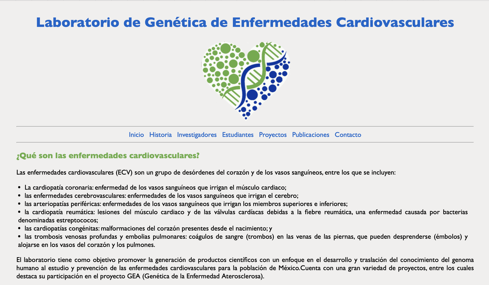
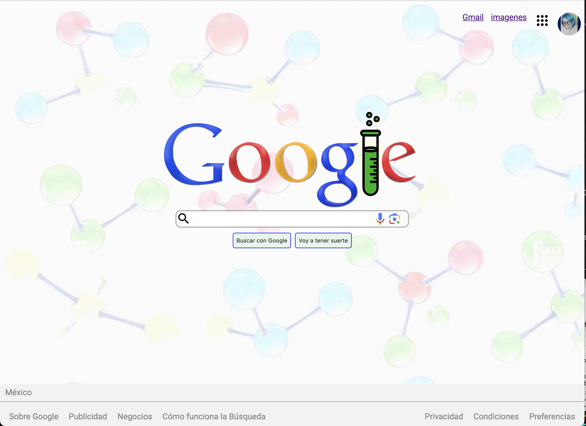
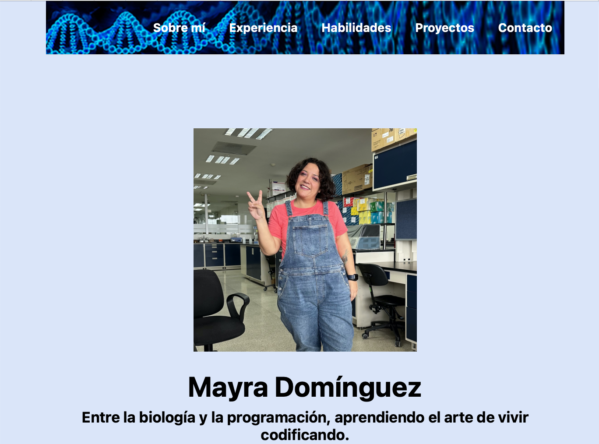
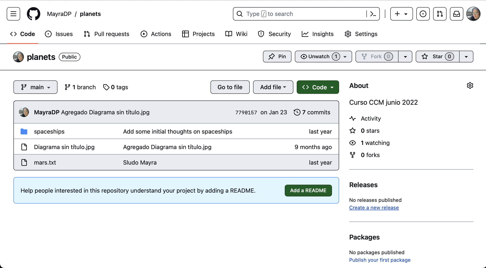
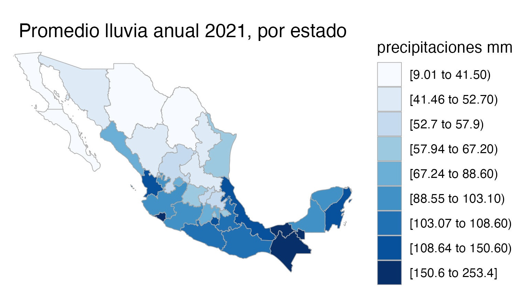
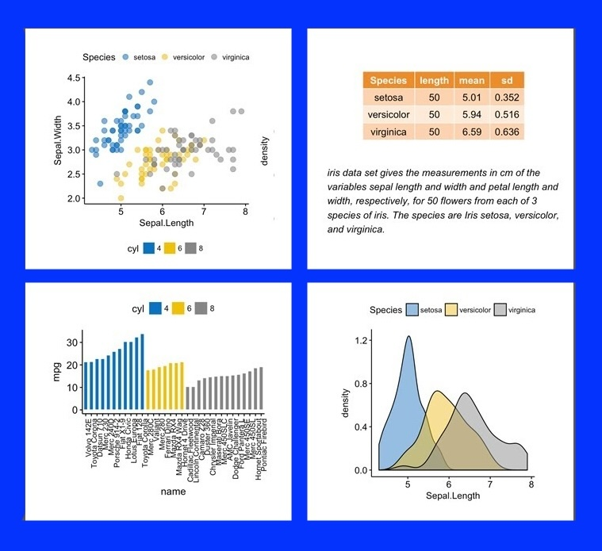

Mi primera página
Una página Web del Lab. de Enfermedades Cardiovasculares creada para el bootcamp Tecnolochicas PRO.

Clon de Google
Clon de Google, proyecto para que permitió aprender cambio de estilos con CSS y html.

Mis primer Portafolio
Primer avance de mi protafolio creada en Tecnolochicas PRO utilizando Bootstrap.

Mis primeros commits
Utilizando commits y colaboraciones con otros usuarios de GitHub.

Lluvia Rladies-Morelia
Usando mxmaps para crear gráfico de lluvia en el meetup de Rladies-Morelia.

Gráficas con Rstudio
Aprendiendo a utilizar Rstudio para crear gráficos de datos en el laboratorio.